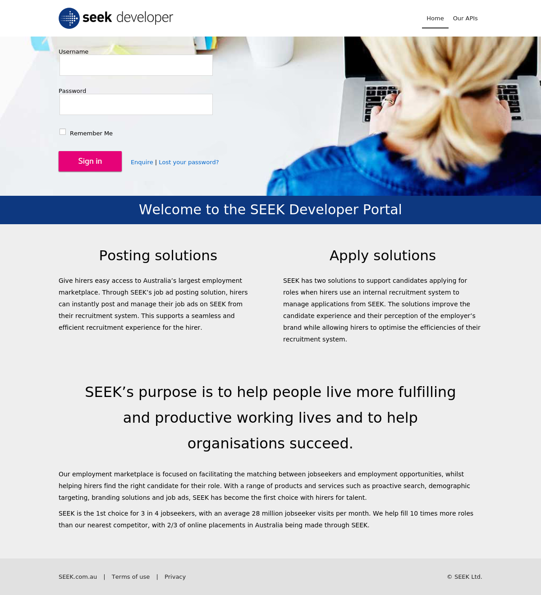

Generated by LazyRecon on Tue May 21 10:24:48 EDT 2019
Port 80 Port 443 
; <<>> DiG 9.11.4-2-Debian <<>> devportal.seek.com.au ;; global options: +cmd ;; Got answer: ;; ->>HEADER<<- opcode: QUERY, status: NOERROR, id: 11186 ;; flags: qr rd ra; QUERY: 1, ANSWER: 2, AUTHORITY: 0, ADDITIONAL: 1 ;; OPT PSEUDOSECTION: ; EDNS: version: 0, flags:; MBZ: 0x0005, udp: 512 ;; QUESTION SECTION: ;devportal.seek.com.au. IN A ;; ANSWER SECTION: devportal.seek.com.au. 5 IN CNAME wp20-gw2.host.pressdns.com. wp20-gw2.host.pressdns.com. 5 IN A 35.168.216.102 ;; Query time: 224 msec ;; SERVER: 192.168.58.2#53(192.168.58.2) ;; WHEN: Tue May 21 10:24:48 EDT 2019 ;; MSG SIZE rcvd: 106
devportal.seek.com.au is an alias for wp20-gw2.host.pressdns.com. wp20-gw2.host.pressdns.com has address 35.168.216.102
HTTP/1.1 301 Moved Permanently Date: Tue, 21 May 2019 14:24:49 GMT Content-Type: text/html; charset=UTF-8 Content-Length: 0 Connection: keep-alive Server: Pagely-ARES/1.4.1 Expires: Tue, 21 May 2019 14:53:29 GMT Cache-Control: max-age=3600 X-Redirect-By: WordPress Location: https://devportal.seek.com.au/ X-Gateway-Cache-Key: 1558404711.001|standard|http|devportal.seek.com.au||/ X-Gateway-Cache-Status: HIT X-Gateway-Skip-Cache: 0 HTTP/2 403 date: Tue, 21 May 2019 14:24:51 GMT content-type: text/html; charset=iso-8859-1 content-length: 209 vary: Accept-Encoding server: Pagely-ARES/1.4.1
nmap -sV -T3 -Pn -p3868,3366,8443,8080,9443,9091,3000,8000,5900,8081,6000,10000,8181,3306,5000,4000,8888,5432,15672,9999,161,4044,7077,4040,9000,8089,443,7447,7080,8880,8983,5673,7443 Starting Nmap 7.70 ( https://nmap.org ) at 2019-05-21 10:24 EDT Nmap scan report for devportal.seek.com.au (35.168.216.102) Host is up (0.30s latency). rDNS record for 35.168.216.102: ec2-35-168-216-102.compute-1.amazonaws.com Not shown: 31 filtered ports PORT STATE SERVICE VERSION 443/tcp open ssl/http OpenResty web app server 8080/tcp closed http-proxy Service detection performed. Please report any incorrect results at https://nmap.org/submit/ . Nmap done: 1 IP address (1 host up) scanned in 44.98 seconds